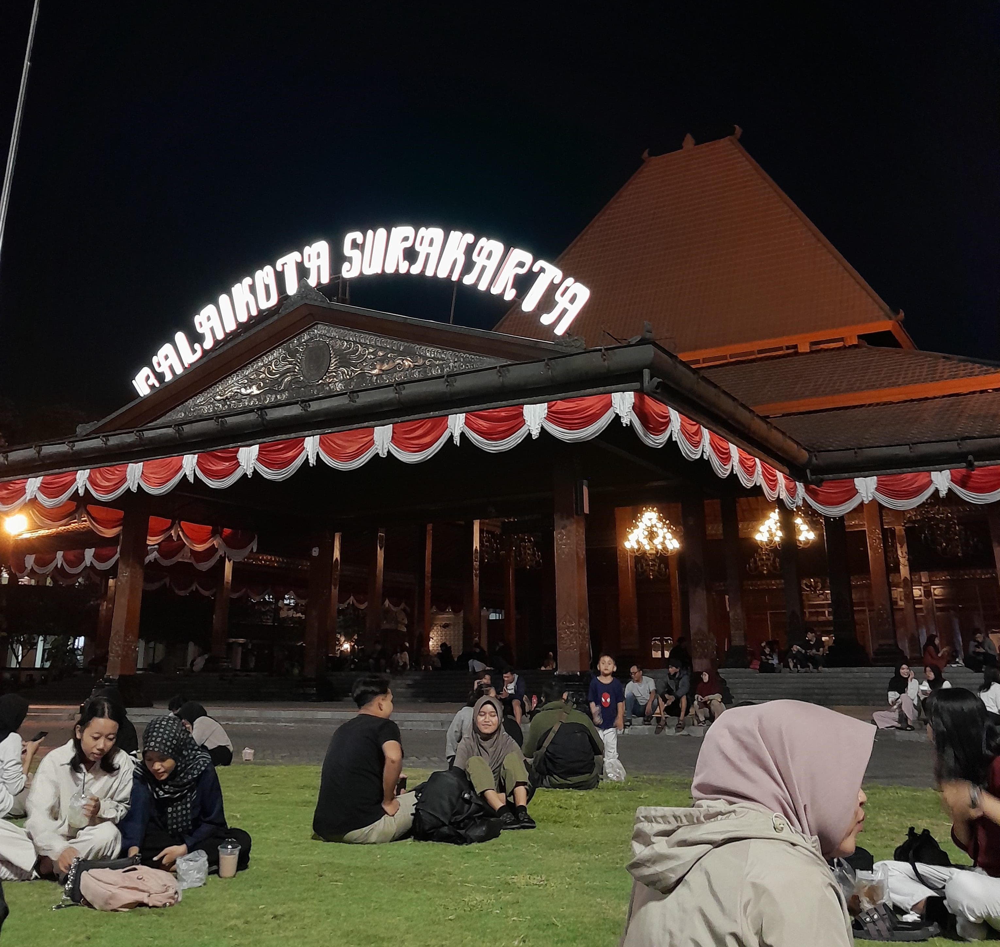

Tentang Kami - Solo Insight

Selamat datang di Solo Insight, sumber berita terpercaya yang mengupas tuntas segala hal tentang kota Solo. Kami hadir untuk memberikan informasi terkini dan menarik seputar Solo, mulai dari budaya yang kaya, kuliner khas yang menggugah selera, hiburan yang beragam, destinasi pariwisata menawan, hingga perkembangan ekonomi dan UMKM lokal.
SoloInsight berkomitmen untuk menjadi jendela bagi masyarakat dan wisatawan dalam mengenal dan mengeksplorasi kekayaan Solo secara mendalam. Dengan tim redaksi yang berdedikasi, kami menyajikan berita yang akurat, inspiratif, dan relevan agar Anda selalu terhubung dengan dinamika kota Solo.
Mari jelajahi Solo bersama kami, temukan cerita unik dan peluang menarik dari tanah budaya dan kreativitas yang tak pernah berhenti berkembang. SoloInsight, suara dan cermin Solo untuk Anda.